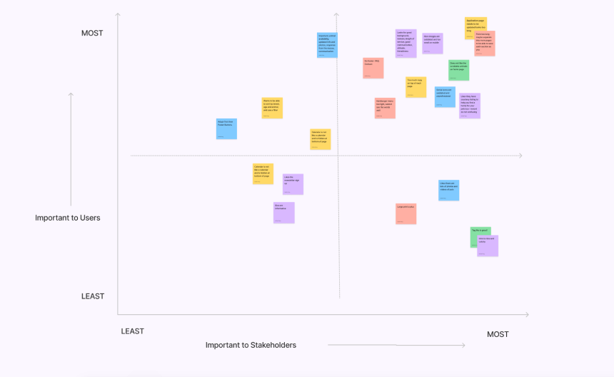
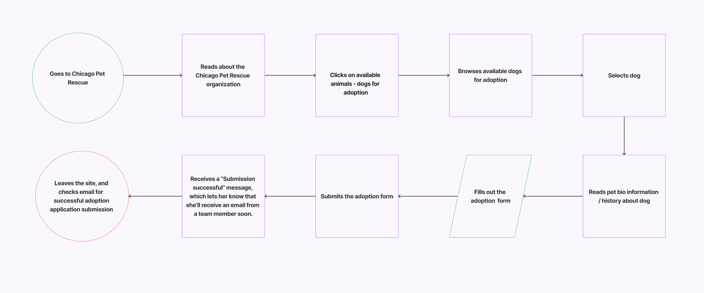

Chicago Pet Rescue is a non-profit, foster home and volunteer-based rescue, dedicated to rescuing stray and abandoned animals. Their goal is to rescue as many animals as they can safely manage through foster homes. They rescue dogs, puppies, cats, kittens, birds and other small animals.
3 Weeks
Research, UX/UI Design, Code
Ashlie, Bea, Valerie
Figma, Figjam, InVision, GitHub, VS Code, Gantt Chart, Canva, PhotoShop, Google Docs, Zoom
With so many animals in need of care and resources, and people looking for company and connection, often animal lovers feel more motivated to adopt a pet instead of purchasing one. When navigating a pet rescue webiste, in order to feel motivated to engage in the adoption process, the user needs to have trust in the organization and feel comfortable and satisfied with the amount of information they find. We identified a gap between what the visitors of the site expected and what the webiste provided. We were able to rethink ways to help the organization’s website serve a bigger purpose and for pet lovers to give back in a manner that provides value to all parties involved.
The Chicago Pet Rescue webiste was cluttered and in need of updating. The site needed to focus on adoption as their main goal and encourage more foot traffic.

To create a streamlined and visually appealing site that clearly explains the adoption process and is easier to navigate. Apply modern UI elements, simplify the application form, and re-organize the navigation to enhance the usability and aesthetics of the Chicago Pet Rescue website while maintaining most of the original site composition and content integrity.
Time was a big constraint as the project needed to move fast. The team created a clear project scope and timeline at the outset of the project to ensure the efficient and effective investment our time and effort.
The research plan served as a base to set expectations and clear communication. We outlined the research objectives, goals, methods, and logistical needed for the case study.

We conducted user interviews to identify the challenges that pet rescuers faced when navigating the site as well as potential solutions to alleviate these pain points.
The interview data was organized into an Affinity Diagram which helped us sort and prioritize answers based on recurring themes and categories outlined by the team.
Using users insights as our starting point, we used a prioritization matrix to highlight the user’s most relevant needs and the goals of the project.
The group then voted on answers we felt offered the greatest potential for viable solutions. Each insight inspired multiple ideas that the team was able to collectively review and run through. These acted as our navigational compass through design and feature decisions.


We evaluated the site for its use of heuristics and UI practices and identified major weaknesses that needed to be addressed.
We gathered content that was used to inspire and inform our solution and lead us to originality.
We went through the process of card sorting to start giving form to our ideas and solutions.

We mapped out the user experience to identify the users steps and determine the design requirements to meet the users needs.

With the initial concept in mind, we quickly generated sketches for possible solutions.
The concept was translated into a few simple wireframes with a low-degree of complexity
The new logo design was based on more comtemporary look of a combination of the three kind of animals from the original logo.

A style guide was defined to apply an original brand style to more robust prototypes.


Removed the reviews section from the homepage since many users expressed they normally don't read or trut them.
Added personalized information like Temperament into an clearly organized pet card for easy discoverability.